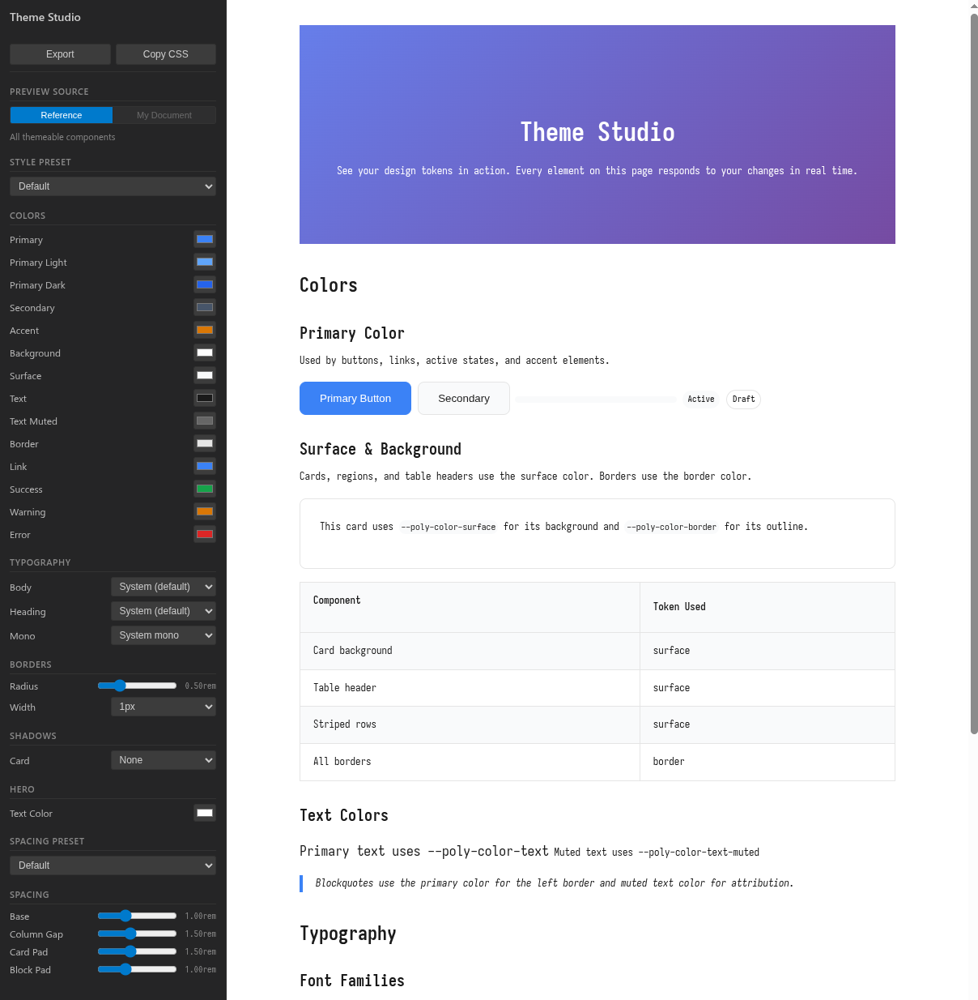

A visual theme editor built into VS Code. Tweak colors, fonts, and spacing with live preview.
Theme Studio is a webview panel inside VS Code that gives you direct control over Polyester's design tokens. Instead of editing JSON by hand, you see color pickers, font dropdowns, and spacing sliders—with changes reflected instantly in a live preview.
Open it with Ctrl+Shift+T (or Cmd+Shift+T on Mac), or run Polyester: Open Theme Studio from the command palette. Requires a .poly file to be open.

14 color tokens with native color picker inputs:
Primary, Primary Light, Primary Dark
Secondary, Accent
Background, Surface
Text, Text Muted, Border
Link
Success, Warning, Error
Font family dropdowns for three slots:
Body — System, Inter, Nunito, Georgia, Lora
Heading — Same options
Mono — System mono, JetBrains Mono, Fira Code, Source Code Pro
Radius — Slider from 0 to 2rem
Width — Dropdown: 1px, 2px, 3px
Shadow — None, Subtle, Medium, Strong
Select a spacing preset (Compact, Default, Spacious) or fine-tune individual tokens:
Base spacing (0.5-2rem)
Column gap (0.5-3rem)
Card padding (0.5-3rem)
Block padding (0.5-2rem)
The right side of Theme Studio renders a live document that updates as you change tokens. No recompilation needed—CSS variables are swapped in real time.
A built-in showcase that exercises every visual token—hero, cards, tables, code blocks, buttons. Always available as a baseline.
Toggle to preview your own .poly file. The active editor file is compiled and displayed. Re-renders when you save.
When you've dialed in a look, export it for reuse.
Click Export and name your style. Saves a StyleTokens JSON file to ~/.config/polyester/styles/<name>.json. Use it in any document:
poly build doc.poly --style acmeClick Copy CSS to get a :root block with all --poly-* variables. Paste it into a /style block or external stylesheet.
:root {
--poly-color-primary: #e11d48;
--poly-font-body: Lora, serif;
}Open a .poly file in VS Code
Press Ctrl+Shift+T (or Cmd+Shift+T on Mac)
Pick a style preset as a starting point
Tweak colors, fonts, and spacing with the controls
Toggle to "My Document" to see how your file looks
Export as a reusable JSON style or copy the CSS
The Theme Studio requires the Polyester VS Code extension. Install it from the Extensions marketplace or build from source in editors/vscode/.